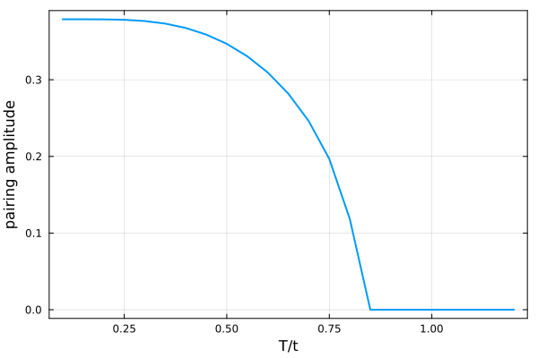

Mean-field theory at finite temperature
This page extends the zero-temperature mean-field page to finite temperature. At finite temperature the next G is the thermal state of the decoupled Hamiltonian, which correlation_matrix(F; β) gives from its BdG eigendecomposition. We follow the superconducting order of an attractive Hubbard ring as the temperature rises.
using FermionicHilbertSpaces, LinearAlgebrausing FermionicHilbertSpaces.FreeFermionsThe attractive Hubbard ring is half filled at μ = U/2.
@fermions fL = 6t = 1U = -4tspins = (:↑, :↓)n(i, σ) = f[i, σ]' * f[i, σ]hopping = sum(-t * f[i, σ]' * f[mod1(i + 1, L), σ] + hc for i in 1:L, σ in spins)ham = hopping + U * sum(n(i, :↑) * n(i, :↓) for i in 1:L) - U / 2 * sum(n(i, σ) for i in 1:L, σ in spins);Close to the transition the iteration converges slowly, so maxiter is large.
Hbdg = hilbert_space(f, [(i, σ) for i in 1:L for σ in spins], BdG())thermal_correlations(op, β) = correlation_matrix(eigen(representation(op, Hbdg, Matrix), BdGEigen()); β)function self_consistent(G, β; tol = 1.0e-6, maxiter = 10_000) for _ in 1:maxiter Gnew = thermal_correlations(mean_field(ham, G, Hbdg), β) norm(Gnew - G) < tol && return Gnew G = Gnew end error("The mean-field iteration did not converge in $maxiter steps.")end;We seed the iteration with on-site pairing and raise the temperature, starting each point from the previous solution. The order parameter is the pairing amplitude, the expectation value of f[i, :↓] * f[i, :↑].
pairing = sum(f[i, :↑]' * f[i, :↓]' + hc for i in 1:L)Ts = t .* (0.1:0.05:1.2)function sweep(Ts) G = thermal_correlations(hopping + pairing, 1 / first(Ts)) return map(Ts) do T G = self_consistent(G, 1 / T) abs(expectation(f[1, :↓] * f[1, :↑], G, Hbdg)) endend;amplitude = sweep(Ts);using Plotsplot(Ts ./ t, amplitude; xlabel = "T/t", ylabel = "pairing amplitude", legend = false, lw = 2, frame = :box)
The pairing amplitude shrinks as the temperature rises and vanishes at a critical temperature, above which the thermal state of the free ring is self-consistent. Mean field gives this sharp transition even on a small ring because it ignores fluctuations, which in a finite system smooth the transition into a crossover.
This page was generated using Literate.jl.